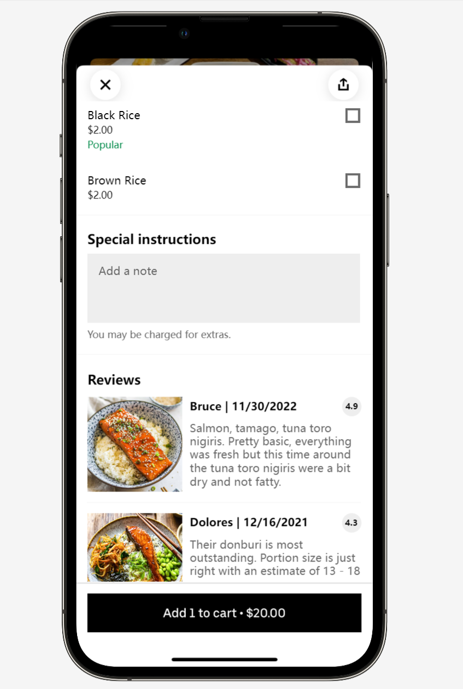

Yenan Huang
Projects
About
Yenan Huang
UI / UX Designer
Third Year Student at Simon Fraser University
SFU Equipment Booking
Portal Redesign
Website Evaluation & Redesign
View Project
Review Section
New Uber Eats Feature Design
View Project
